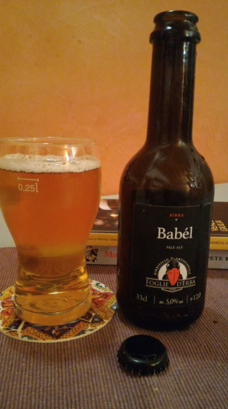
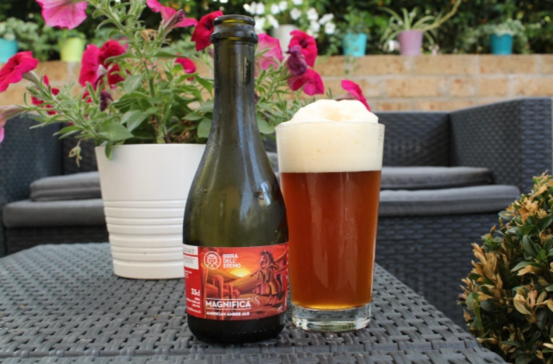

“Uno”, Birra Chiara - La birra per tutti gli usi Beba, Piemonte
La prima creazione di uno dei birrifici artigianali più vecchi d’Italia. "Uno" è una sorpresa, una birra alla mano, perfetta per chi cerca prima di tutto un gusto amabile. Viene preparata solo con gli ingredienti essenziali, ha un colore paglierino brillante, una schiuma fresca e cremosa e un gusto di lievito, tratti distintivi delle lager tedesche, che rendono facile capire come mai sia il tipo di birra più consumato al mondo. Abbinamento consigliato: snack, ravioli cinesi… ma è perfetta anche da sola.
“Tipo Pils” Pilsner - Pils reinventata Birrificio Italiano, Lombardia
Metti da parte quello che sai sulle Pilsner in stile continentale. Questa è una variante più botanica, con aromi più verdi, erbacei e una sensazione leggermente rotonda e fruttata, con note finali di tè bianco e camomilla. Non farti spaventare, ma è una birra estremamente complicata, piena di personalità, straordinariamente pulita e incredibilmente dissetante. Dopo averla bevuta non penserai più alla Pilsner nello stesso modo. Abbinamento consigliato: trofie al pesto, insalate verdi, tonno o salmone crudo, pesce bianco al forno, formaggi freschi di capra.
“Babél”, Pale Ale - Definitiva rinfrescante Birrificio Foglie d’Erba, Friuli – Venezia Giulia
In un mercato in cui dominano le IPA e una tendenza crescente a produrre birre estremamente amare e dai profumi di luppolo, Babél serve a ricordare il grande valore delle pale ale. Alla vista è luminosa e dorata; al naso, è leggermente agrumata e in bocca si presenta leggera, finemente frizzante, ricca in mango e papaya. È la compagna ideale per godersi il tramonto dopo una lunga e calda giornata. Abbinamento consigliato: tacos, ceviche, pollo fritto, paella, crostata di albicocche, formaggi morbidi.

“Golden Ale” - Una birra appena sfornata Project Local Brewery, Emilia Romagna
Il profumo dolce e fragrante del pane in forno è ora disponibile in formato liquido, grazie al micro birrificio emiliano Project Local Brewery, ramo della cantina Podere La Berta, appena fuori Ravenna. Nonostante sia più pallida nel colore rispetto a quanto suggerisce il nome, questa birra ha uno profondo spessore nel sapore, che vede l’alternarsi di note di lievito e di malva, con punte di acero, cannella e miele. Abbinamento consigliato: pizza, pollo tandoori, lasagna, insalata di patate, torta di mele.
“Magnifica", American Amber Ale - La Ale che asserisce Birrificio dell’Eremo, Umbria
Questa è una birra che ti prende e non ti lascia andare via. Una prima e indimenticabile fragranza di mele rosse mature e toffee lascia progressivamente spazio a una feroce ripresa su questa discendente inglese delle pale ale. Il luppolo poco aromatico e un caramello molto intenso si immettono fortemente in bocca e svaniscono con amaro stimolante, che ha una permanenza in bocca lunga, senza essere né resinoso né appiccicoso. Abbinamento consigliato: hamburger, carne alla griglia, curry indiano, riso speziato, noodle.